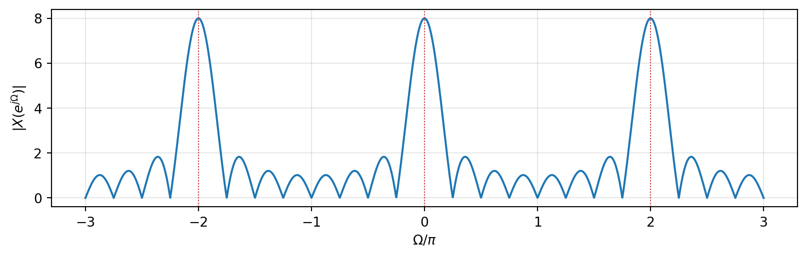
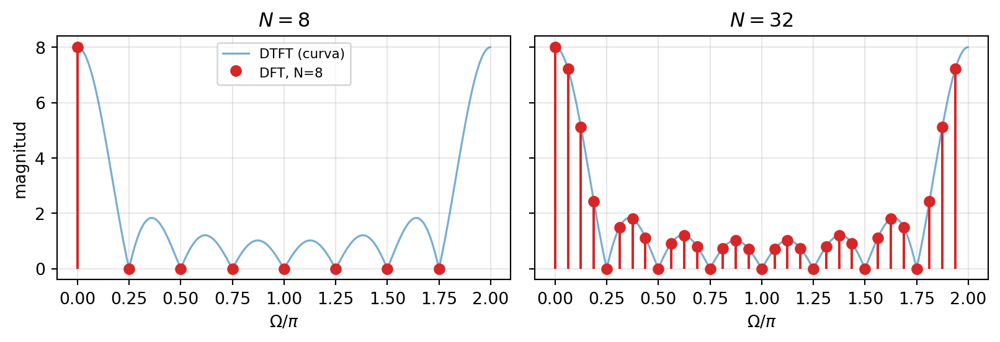
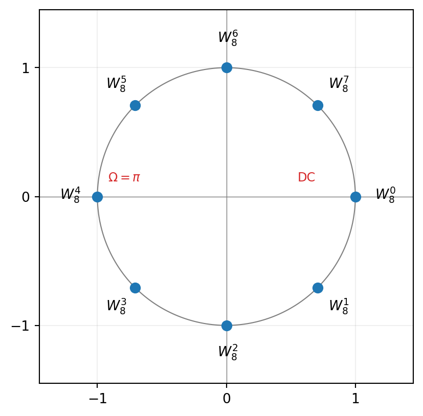
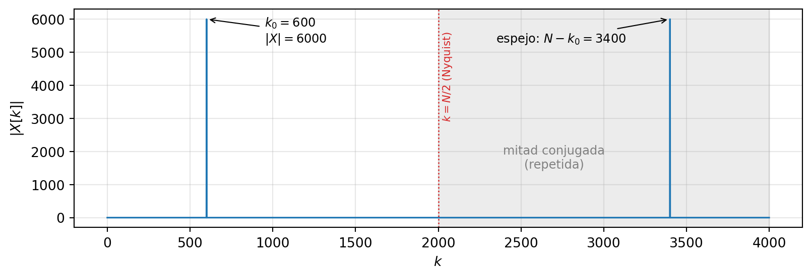
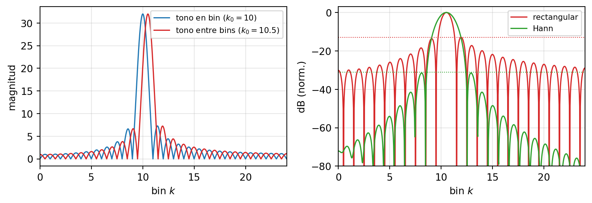
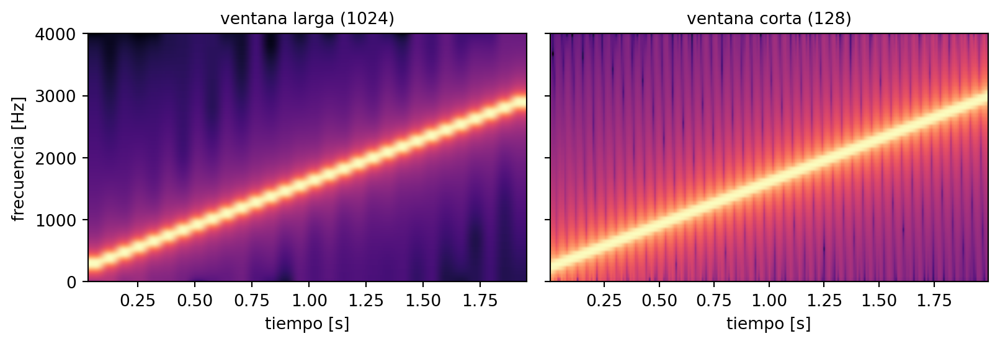
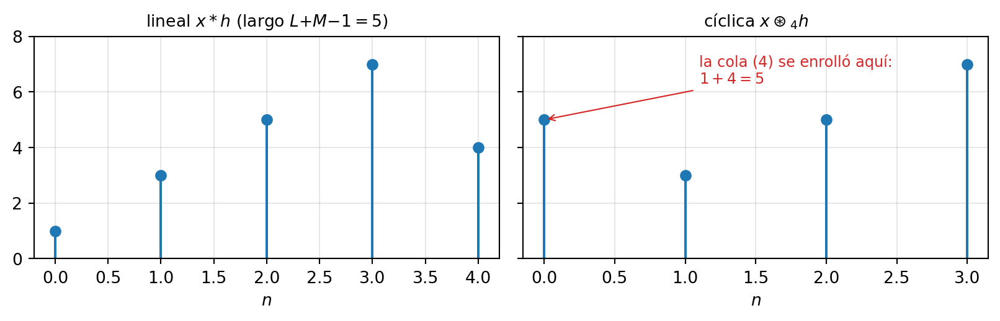

7 Fourier discreto y análisis espectral
NotaObjetivos del capítulo [U7.1–U7.6]
Al terminar este capítulo podrás: calcular la DTFT de las secuencias estándar, explicar por qué todo espectro discreto es periódico en \Omega y usarla como la transformada Z restringida al círculo unitario [U7.1]; recorrer la cadena DFS → DFT → FFT: el par DFT/IDFT, su lectura matricial con las raíces de la unidad, y por qué la FFT cuesta N\log_2 N [U7.2]; leer el vector que entrega np.fft.fft de una señal real — índice ↔︎ Hz, simetría conjugada, mitad útil, y qué hace (y qué no hace) el zero-padding [U7.3]; predecir y mitigar la fuga espectral eligiendo ventana, y leer un espectrograma [U7.4]; explicar que multiplicar DFTs es convolucionar cíclicamente, y obtener la convolución lineal vía FFT con zero-padding [U7.6].
Evaluación: U7.1 y U7.2 entran a la I4; U7.3, U7.4 y U7.6 son materia de examen (la convolución cíclica como operación ya la conoces de U5.3); la sección optativa de U7.5 no se evalúa.
7.1 La última casilla del mapa
Todo el semestre cabe en un cuadro de dos por dos. En el mundo continuo aprendiste a mirar señales en un eje de frecuencias (la transformada de Fourier, capítulo 3) y luego en un plano completo (Laplace, capítulo 4). En el mundo discreto ya tienes el plano — la transformada Z del capítulo 6 —, y este capítulo llena la casilla que falta:
| tiempo continuo | tiempo discreto | |
|---|---|---|
| espectro en un eje | Fourier: X(\omega) | DTFT: X(e^{j\Omega}) ← este capítulo |
| espectro en un plano | Laplace: X(s), eje j\omega | Z: X(z), círculo e^{j\Omega} |
Hay una simetría preciosa escondida ahí: así como el eje j\omega es la frontera del plano s donde Laplace se vuelve Fourier, el círculo unitario es la frontera del plano z donde la transformada Z se vuelve… la transformada de este capítulo. No vamos a inventar una transformada nueva: vamos a ponerle nombre a una que ya usabas sin saberlo.
Y hay una segunda razón, más urgente, para este capítulo: es el único Fourier que un computador puede calcular. La TF continua integra sobre toda la recta; la DTFT (ya verás) suma infinitos términos y entrega una curva continua. Un computador no puede hacer ninguna de las dos cosas — pero sí puede multiplicar un vector por una matriz. Ese Fourier finito es la DFT, el algoritmo que la calcula rápido es la FFT, y entre ambos sostienen prácticamente todo el análisis de señales del mundo real: el ecualizador de tu teléfono, la compresión de audio, el WiFi, la resonancia magnética. Al final del capítulo — y del libro — volveremos a la promesa del prefacio con estas herramientas en la mano.
7.2 La DTFT: el espectro de las señales discretas
ImportanteDefinición: DTFT
Para una secuencia x[n], la transformada de Fourier de tiempo discreto es X(e^{j\Omega}) = \sum_{n=-\infty}^{\infty} x[n]\, e^{-j\Omega n} \qquad \text{(análisis)} x[n] = \frac{1}{2\pi}\int_{-\pi}^{\pi} X(e^{j\Omega})\, e^{j\Omega n}\, d\Omega \qquad \text{(síntesis)} con \Omega en radianes por muestra.
Tres lecturas de la misma fórmula, de la más nueva a la más vieja:
- Es el gemelo discreto de la TF: la integral \int x(t)e^{-j\omega t}dt se volvió suma, pero el espectro sigue siendo una función continua de \Omega.
- Es una descomposición en sinusoides: la ecuación de síntesis dice que toda secuencia es una superposición de exponenciales e^{j\Omega n}, con X(e^{j\Omega}) diciendo cuánto de cada una.
- Es la transformada Z evaluada en el círculo unitario: X(e^{j\Omega}) = X(z)\Big|_{z = e^{j\Omega}} Esta es la lectura que cobra el capítulo 6. Allá aprendiste a estimar la respuesta en frecuencia de un filtro “caminando por el círculo” y midiendo distancias a polos y ceros — pues bien, eso que calculabas era la DTFT de h[n]. Por eso la notación es X(e^{j\Omega}) y no X(\Omega): el argumento recuerda de dónde viene. Polos cerca del círculo ⇒ picos; ceros cerca ⇒ valles. Toda la geometría del capítulo 6 aplica intacta.
Honestidad matemática (treinta segundos): la suma converge con seguridad si \sum_n |x[n]| < \infty — que es exactamente la condición de que la ROC de X(z) contenga el círculo unitario, el mismo criterio de estabilidad del capítulo 6. Para señales de energía y para casos con impulsos en frecuencia se extiende, igual que hicimos con la TF continua. Seguimos.
AdvertenciaNotación: \Omega, no \omega
En este libro la frecuencia discreta se escribe \Omega (rad/muestra) y la continua \omega (rad/s) — así nunca se confunden al convivir en un mismo problema de muestreo. [Oppenheim] y [Alvarado] escriben \omega para ambas; cuando los leas, traduce.
7.2.1 La consecuencia del mundo discreto: el espectro es periódico
Evalúa la definición en \Omega + 2\pi: e^{-j(\Omega + 2\pi)n} = e^{-j\Omega n}\,\underbrace{e^{-j2\pi n}}_{=\,1 \text{ porque } n \in \mathbb{Z}} = e^{-j\Omega n} \quad\Longrightarrow\quad X(e^{j(\Omega+2\pi)}) = X(e^{j\Omega})
Todo espectro discreto es periódico con período 2\pi, sea cual sea la señal. No es una propiedad de algunas secuencias: es la marca de fábrica del mundo discreto, y ya la conocías con otro disfraz — en el capítulo 5 viste que las sinusoides discretas de frecuencias \Omega y \Omega + 2\pi son la misma secuencia. Si las señales base son indistinguibles, el espectro no puede distinguirlas. Geométricamente es todavía más claro: \Omega es un ángulo sobre el círculo unitario, y al dar la vuelta completa vuelves al mismo punto.
La consecuencia práctica: todo el contenido frecuencial vive en una vuelta, \Omega \in [-\pi, \pi). Ahí, \Omega = 0 es la DC (punto z = 1), y \Omega = \pm\pi es la frecuencia más alta posible — la secuencia (-1)^n, el punto z = -1. “Más agudo que \pi” no existe: pasado \pi se vuelve a bajar (el aliasing del capítulo 5, contado desde el espectro).
Y si x[n] es real, además X(e^{-j\Omega}) = X^*(e^{j\Omega}) — la simetría Hermitiana que viene persiguiéndote desde el capítulo 1: magnitud par, fase impar. Basta graficar [0, \pi].
7.2.2 Pares básicos
| x[n] | X(e^{j\Omega}) | comentario |
|---|---|---|
| \delta[n] | 1 | espectro blanco, como \delta(t) |
| \delta[n - n_0] | e^{-j\Omega n_0} | retardo = fase lineal |
| a^n u[n], \lvert a\rvert < 1 | \dfrac{1}{1 - a\,e^{-j\Omega}} | \frac{z}{z-a} en el círculo; pasa-bajos si 0<a<1 |
| pulso de largo M | e^{-j\Omega\frac{M-1}{2}}\,\dfrac{\sin(\Omega M/2)}{\sin(\Omega/2)} | el núcleo de Dirichlet |
Los dos primeros son inmediatos desde la definición (hazlos: una línea cada uno). El tercero es una serie geométrica — la misma cuenta del capítulo 6, restringida al círculo; su polo en z = a produce el pico en \Omega = 0 (¿y si -1 < a < 0? El polo se va al semieje negativo: pico en \Omega = \pi, pasa-altos). El cuarto merece desarrollo completo, porque su resultado protagoniza media parte final del capítulo:
TipEjemplo resuelto (calibre I4): el pulso rectangular y el núcleo de Dirichlet
Calcula la DTFT de x[n] = 1 para 0 \le n \le M-1, cero fuera.
Solución. Es una suma geométrica finita: X(e^{j\Omega}) = \sum_{n=0}^{M-1} e^{-j\Omega n} = \frac{1 - e^{-j\Omega M}}{1 - e^{-j\Omega}} Ahora el truco estándar — factorizar la “media exponencial” arriba y abajo para armar senos: \frac{e^{-j\Omega M/2}\left(e^{j\Omega M/2} - e^{-j\Omega M/2}\right)}{e^{-j\Omega/2}\left(e^{j\Omega/2} - e^{-j\Omega/2}\right)} = e^{-j\Omega\frac{M-1}{2}}\,\frac{\sin(\Omega M/2)}{\sin(\Omega/2)} El cociente de senos es el núcleo de Dirichlet: vale M en \Omega = 0 (suma de M unos) y se anula en \Omega = 2\pi k/M. Es el primo periódico de la sinc: mismo lóbulo principal, mismos lóbulos laterales — pero repitiéndose cada 2\pi, como todo espectro discreto debe.
Rect ↔︎ sinc, segunda temporada. En el capítulo 3, el pulso rectangular continuo tenía espectro sinc. Aquí, el pulso discreto tiene espectro Dirichlet — la “sinc periódica”. La analogía no es decorativa: es un anticipo. Cuando en la Sección 7.5 truncemos una señal para analizarla, este Dirichlet volverá a escena, y no como invitado amable.
7.2.3 Propiedades
Calcan las de la TF continua (las demostraciones son las mismas sustituciones, con sumas en vez de integrales):
| Propiedad | Tiempo | Frecuencia |
|---|---|---|
| Linealidad | ax_1[n] + bx_2[n] | aX_1 + bX_2 |
| Desplazamiento | x[n - n_0] | e^{-j\Omega n_0}\, X(e^{j\Omega}) |
| Modulación | e^{j\Omega_0 n}\, x[n] | X(e^{j(\Omega - \Omega_0)}) |
| Convolución | x[n] * h[n] | X(e^{j\Omega})\, H(e^{j\Omega}) |
| Multiplicación | x[n]\, w[n] | \frac{1}{2\pi}\, X \circledast W (convolución periódica) |
| Parseval | \sum_n \lvert x[n]\rvert^2 | = \frac{1}{2\pi}\int_{-\pi}^{\pi} \lvert X(e^{j\Omega})\rvert^2\, d\Omega |
La que paga el curso es la de convolución: para un sistema LTI discreto, Y(e^{j\Omega}) = X(e^{j\Omega})\,H(e^{j\Omega}), con H(e^{j\Omega}) = la respuesta en frecuencia que en el capítulo 6 leías desde polos y ceros. Filtrar = multiplicar espectros, palabra por palabra como en el mundo continuo. Y anota la de multiplicación — hoy parece la hermana rara de la tabla, pero es exactamente la que explicará la fuga espectral.
Ejemplo relámpago (hazlo ahora): el promedio móvil h[n] = \tfrac12(\delta[n] + \delta[n-1]) tiene H(e^{j\Omega}) = \tfrac12\left(1 + e^{-j\Omega}\right) = e^{-j\Omega/2}\cos(\Omega/2) |H| = |\cos(\Omega/2)|: vale 1 en DC y 0 en \Omega = \pi — el pasa-bajos más humilde del mundo, el mismo que en el capítulo 6 analizaste con su cero en z = -1. Dos caminos, una respuesta.
7.3 De la DFS a la DFT… y la FFT
La DTFT es perfecta para lápiz y papel — y perfectamente incalculable para un computador: suma infinitos términos y entrega una curva continua. La versión computable se construye en dos pasos cortos, y el primero es un regalo del capítulo 5.
7.3.1 DFS: a las señales periódicas discretas les bastan N armónicos
Sea x[n] periódica con período N. Sus armónicos naturales son e^{j\frac{2\pi k}{N}n}… pero por la no-unicidad de las sinusoides discretas (capítulo 5), el armónico k + N es el mismo que el armónico k: e^{j\frac{2\pi(k+N)}{N}n} = e^{j\frac{2\pi k}{N}n}\,\underbrace{e^{j2\pi n}}_{=1}
Donde la serie de Fourier continua necesitaba infinitos armónicos, aquí solo existen N distintos. La serie es finita — por eso el computador puede:
x[n] = \sum_{k=0}^{N-1} c_k\, e^{j\frac{2\pi k}{N}n} \qquad\qquad c_k = \frac{1}{N}\sum_{n=0}^{N-1} x[n]\, e^{-j\frac{2\pi k}{N}n} \qquad \text{(DFS)}
La fórmula de los c_k es la proyección ortogonal de siempre — la misma del capítulo 3, ahora en dimensión finita. La demostraremos en versión matricial en un momento, y será la más limpia de todo el libro.
7.3.2 La DFT: el Fourier de un vector
En la práctica el computador no tiene señales periódicas: tiene un bloque finito de N muestras — un vector. La DFT es la DFS aplicada al bloque como si fuera un período. (Frase inocente; guárdala. Tendrá consecuencias en la Sección 7.6.)
ImportanteDefinición: DFT e IDFT
Para x[n] con n = 0, \dots, N-1: X[k] = \sum_{n=0}^{N-1} x[n]\, e^{-j\frac{2\pi k}{N}n}, \quad k = 0, \dots, N-1
\qquad\qquad
x[n] = \frac{1}{N}\sum_{k=0}^{N-1} X[k]\, e^{j\frac{2\pi k}{N}n} Es la convención sin 1/N en el análisis (queda en la inversa) — la de NumPy: np.fft.fft / np.fft.ifft. Comparando con la DFS: X[k] = N c_k.
TipEjemplo resuelto (calibre I4): una DFT a mano
Calcula la DFT de x = (1, 0, -1, 0) — un período de \cos\!\left(\frac{2\pi n}{4}\right).
Solución. Con W_4 = e^{-j2\pi/4} = -j, en la suma solo sobreviven n = 0 y n = 2: X[k] = x[0] + x[2]\,W_4^{2k} = 1 + (-1)(-1)^k (porque W_4^2 = (-j)^2 = -1). Evaluando: X[0] = 0, X[1] = 2, X[2] = 0, X[3] = 2: \boxed{X = (0,\; 2,\; 0,\; 2)} Lectura, que vale más que la cuenta: un coseno real reparte su energía en dos líneas, k = 1 y k = N-1 = 3. Son los dos fasores contrarrotantes del capítulo 1 — \cos(\Omega_0 n) = \tfrac12 e^{j\Omega_0 n} + \tfrac12 e^{-j\Omega_0 n} — y el de frecuencia negativa aparece “envuelto” al final del vector. Cada línea vale N/2 = 2: cada fasor de peso \tfrac12 calza con una columna de la base y aporta N veces su peso. Memoriza el patrón (picos en k_0 y N - k_0, altura N/2 por unidad de amplitud): es el corazón de la pregunta de examen de la Sección 7.4.
La otra lectura — fotos de la DTFT. Si x[n] vive solo en 0 \le n \le N-1, compara las definiciones de DTFT y DFT término a término. Son idénticas cuando \Omega = \frac{2\pi k}{N}: X[k] = X(e^{j\Omega})\Big|_{\Omega = \frac{2\pi k}{N}}
La DTFT es la curva completa del espectro; la DFT son N fotos equiespaciadas de esa curva — N puntos repartidos en una vuelta del círculo unitario.

Consecuencia inmediata de la lectura circular: k = 0 es DC, k = N/2 es \Omega = \pi (lo más agudo posible), y los k > N/2 son las frecuencias negativas — por eso el coseno del ejemplo apareció en k = 1 y en k = 3.
7.3.3 La matriz \mathbf{W}: las raíces de la unidad cobran su promesa
La DFT es lineal en x, así que es una multiplicación matriz-vector: \mathbf{X} = \mathbf{W}\,\mathbf{x}, \qquad [\mathbf{W}]_{k,n} = W_N^{kn}, \qquad W_N = e^{-j2\pi/N}
En el Apéndice A quedó plantada una promesa: “las N soluciones de z^N = 1 son las raíces de la unidad, N puntos equiespaciados en el círculo — en el capítulo 7 la DFT se construye enteramente sobre estos puntos”. Hoy se cobra: toda entrada de \mathbf{W} es una potencia de W_N, es decir, una raíz de la unidad; la fila k recorre el círculo dando k vueltas por período — es la sinusoide discreta de frecuencia \Omega_k = \frac{2\pi k}{N} escrita como vector.

Para N = 4, con W_4 = -j (constrúyela tú, recordando que los exponentes van módulo 4): \mathbf{W}_4 = \begin{pmatrix} 1 & 1 & 1 & 1 \\ 1 & -j & -1 & j \\ 1 & -1 & 1 & -1 \\ 1 & j & -1 & -j \end{pmatrix}
Toma dos filas distintas y calcula su producto interno (fila \cdot fila conjugada): da 0. Toma una fila consigo misma: da 4. Lo que acabas de verificar en un caso es el teorema central del capítulo: \mathbf{W}^H\,\mathbf{W} = N\,\mathbf{I} \quad\Longrightarrow\quad \mathbf{W}^{-1} = \frac{1}{N}\,\mathbf{W}^H (la demostración general es la suma geométrica de siempre: \sum_n e^{j\frac{2\pi(k-m)}{N}n} = N si k = m, y 0 si no — el numerador 1 - e^{j2\pi(k-m)} se anula). Las filas de \mathbf{W} son ortogonales: invertir la DFT no requiere eliminación gaussiana, basta conjugar y dividir por N. Eso es la fórmula de la IDFT — y de paso, Parseval gratis: \sum_n |x[n]|^2 = \frac{1}{N}\sum_k |X[k]|^2 es Pitágoras en \mathbb{C}^N.
Da un paso atrás y mira lo que tienes: la serie de Fourier, la TF, la DTFT y la DFT son el mismo gesto geométrico — proyectar sobre una base ortogonal de sinusoides — en cuatro espacios distintos. La del capítulo 3 era una promesa de ordenamiento; esta es su forma final, en dimensión finita, donde todo es un producto interno honesto entre vectores.
7.3.4 La FFT: por qué N\log N cambió la ingeniería
Multiplicar \mathbf{W}\mathbf{x} cuesta \sim N^2 multiplicaciones complejas: N por cada uno de los N coeficientes. ¿Es mucho? Un segundo de audio a 44\,100 Hz: N^2 \approx 2\times 10^9 operaciones — segundos de cálculo por segundo de señal. Durante décadas la DFT fue una curiosidad teórica por esta razón exacta.
La salida (Cooley–Tukey, 1965) es divide y vencerás. Separa la señal en sus muestras pares g[r] = x[2r] e impares h[r] = x[2r+1]: X[k] = \sum_{r=0}^{N/2-1} g[r]\, W_{N/2}^{kr} \;+\; W_N^{k}\sum_{r=0}^{N/2-1} h[r]\, W_{N/2}^{kr} \;=\; G[k] + W_N^k\, H[k] usando W_N^2 = W_{N/2} (¡verifícalo!). Una DFT de N puntos = dos DFTs de N/2 + N operaciones de mezcla. Y la mitad superior de los X[k] sale gratis de las mismas dos sub-DFTs (G y H tienen período N/2; solo cambia el signo del término W_N^k — la operación se dibuja como una “mariposa”). Ahora repite la jugada con cada mitad, y con las mitades de las mitades, hasta llegar a DFTs de 1 punto: \log_2 N niveles con \sim N operaciones cada uno: \boxed{\; N^2 \;\longrightarrow\; N\log_2 N \;}
| N = 10^6 | operaciones | en un chip de 10^9 mult/s |
|---|---|---|
| DFT directa | N^2 = 10^{12} | \sim 17 minutos |
| FFT | N\log_2 N \approx 2\times 10^7 | \sim 20 milisegundos |
Factor \sim 50\,000. No es “un poco más rápido”: es la diferencia entre que el análisis espectral en tiempo real exista o no exista. Ecualizadores, MP3 y AAC, OFDM en WiFi y 5G, resonancia magnética: todo eso corre sobre estas mariposas. La FFT no es una transformada nueva — calcula exactamente la DFT — y por eso todo lo que aprendas sobre la DFT vale para ella.
7.4 Leer el vector de una FFT real
X = np.fft.fft(x) devuelve N números complejos, y ninguno trae etiqueta de “Hz”. Saber ponérsela es — literalmente — una pregunta de examen de todos los años. Esta sección es esa pregunta, resuelta con calma una vez para que puedas resolverla rápido siempre.
La única fórmula nueva. El bin k es la foto de la DTFT en \Omega_k = \frac{2\pi k}{N}; el muestreo (capítulo 5) conecta la frecuencia discreta con la física: \Omega = 2\pi f / F_s. Igualando: \boxed{\; f_k = k\,\frac{F_s}{N} \;} \qquad\qquad \Delta f = \frac{F_s}{N} = \frac{1}{T_{\text{obs}}} El espaciado entre bins — la resolución — es el inverso de la duración observada. Anota esa segunda forma: ordena todo lo que sigue.
Y para señales reales, la simetría Hermitiana de la Sección 7.2.1 aterriza en el vector como simetría conjugada: X[N - k] = X^*[k] La mitad superior del vector (k > N/2) es información repetida: son las frecuencias negativas, f = (k - N)\,F_s/N, envueltas al final. Por eso en la práctica se grafica solo de k = 0 (DC) a k = N/2 (Nyquist, F_s/2).
TipEjemplo resuelto completo (calibre examen): el vector de un tono
Se graba durante medio segundo el tono puro x(t) = 3\cos(2\pi\cdot 1200\, t) con F_s = 8000 Hz, y se calcula np.fft.fft de las N = 4000 muestras. Describe completamente el vector |X[k]|: dónde hay picos, cuánto valen, y qué hay en el resto.
Solución (el desarrollo-tipo, paso a paso):
- Resolución: \Delta f = F_s/N = 8000/4000 = 2 Hz por bin (coherente: T_{\text{obs}} = 0.5 s ⟹ \Delta f = 1/0.5 = 2 Hz).
- Pico directo: k_0 = f/\Delta f = 1200/2 = 600. Entero — el tono cae exactamente en un bin (en 0.5 s caben 600 ciclos justos). Caso ideal.
- Pico espejo: la señal es real ⟹ X[N-k] = X^*[k]: gemelo en k = 4000 - 600 = 3400, que representa -1200 Hz. Es la horquilla de los dos fasores contrarrotantes, envuelta en el vector.
- Alturas: 3\cos(\Omega_0 n) = \tfrac32 e^{j\Omega_0 n} + \tfrac32 e^{-j\Omega_0 n}, y cada fasor que calza con la base aporta N veces su peso: |X[600]| = |X[3400]| = \frac{A\,N}{2} = \frac{3 \cdot 4000}{2} = 6000
- El resto: ceros exactos (ortogonalidad — solo porque el tono cayó justo en un bin).
- Zona útil: de k = 0 a k = N/2 = 2000 (= F_s/2 = 4000 Hz, Nyquist).
(Verificado numéricamente: la FFT de esas 4000 muestras da exactamente picos de 6000.0 en k = 600 y 3400, y el resto bajo 10^{-9}.)
Y la lectura inversa, que es como suele preguntarse: si te muestran un vector de N = 4000 bins tomado a F_s = 8000 Hz con |X[600]| = |X[3400]| = 6000 y cero en el resto, tú reconstruyes: f = 600 \cdot 2 = 1200 Hz, A = 2\cdot 6000/4000 = 3. Señal: 3\cos(2\pi\, 1200\, t) (la fase requeriría mirar \angle X[600]).

7.4.1 Zero-padding: resolución aparente y resolución real
El caso incómodo: mismo tono de 1200 Hz, pero grabado solo 0.1 s (N = 800, \Delta f = 10 Hz). k_0 = 120: aún exacto. Pero un tono de 1205 Hz caería en k = 120.5… que no existe: el pico se reparte entre bins vecinos (y algo más feo, que veremos enseguida). ¿La tentación? “Pego ceros al final hasta N = 8000 y tengo bins de 1 Hz.”
Los ceros efectivamente densifican los bins — como viste en la figura del pulso, la DFT toma más fotos. Pero fotos ¿de qué? De la misma DTFT, la que quedó fijada por las 800 muestras que sí mediste. El zero-padding interpola la curva subyacente; la curva no cambia. Dos tonos que la curva no separa, seguirán sin separarse — solo verás la misma borrosidad con más puntos.
La resolución la compra el tiempo de observación: \Delta f = 1/T_{\text{obs}}, y punto. El zero-padding es útil para ubicar mejor un pico ya resuelto (interpolación), no para resolver lo que la ventana no resolvió: los ceros no midieron nada.
Para separar dos tonos a 3 Hz de distancia necesitas observar \gtrsim 1/3 s. No hay algoritmo que lo evite — es el principio de incertidumbre tiempo-frecuencia, y reaparecerá como el compromiso central de la STFT.
7.5 Artefactos: fuga espectral, ventanas y espectrograma
7.5.1 Por qué el espectro “se ensucia”: el Dirichlet cobra su deuda
¿Por qué el tono que cae entre bins se ve feo, y no solo “repartido entre dos”? Grabar N muestras de una señal más larga es, matemáticamente, multiplicarla por una ventana rectangular. Y la tabla de la Sección 7.2.3 dice qué le pasa al espectro: multiplicar en el tiempo = convolucionar en frecuencia, x_w[n] = x[n]\,w[n] \quad\Longrightarrow\quad X_w = \frac{1}{2\pi}\,X \circledast W ¿Y quién es W, el espectro de la ventana rectangular? El núcleo de Dirichlet de la Sección 7.2.2 — te dije que volvería. Cada línea espectral pura queda convolucionada con él: un lóbulo principal (ancho \approx 2F_s/N entre ceros) y lóbulos laterales que caen lento (el primero, a solo -13 dB). Es rect ↔︎ sinc del capítulo 3, cobrándose en el peor momento posible.
Dos escenarios:
- El tono cae justo en un bin ⟹ la DFT muestrea el Dirichlet exactamente en sus ceros ⟹ una línea limpia. (¡El caso ideal del ejemplo anterior era una carambola afortunada!)
- El tono cae entre bins ⟹ la DFT muestrea el Dirichlet fuera de sus ceros ⟹ energía desparramada por todo el vector: fuga espectral (leakage). Un tono débil vecino queda enterrado bajo los lóbulos del fuerte.
7.5.2 El remedio y su precio: las ventanas
Si el problema es cortar la señal a tijera, el remedio es apagarla suavemente en los bordes: multiplicar por una ventana con forma. La clásica es la de Hann, w[n] = \tfrac12\left(1 - \cos\frac{2\pi n}{N-1}\right), y el mercado ofrece toda una familia:
| Rectangular | Hann | Blackman | |
|---|---|---|---|
| Lóbulo principal (entre ceros) | 2\,F_s/N | 4\,F_s/N | 6\,F_s/N |
| Primer lóbulo lateral | -13 dB | -31 dB | -58 dB |
| Úsala cuando… | máxima resolución; tono en bin | caso general con fuga | tono débil junto a uno fuerte |
No hay ventana gratis. Hann compra lóbulos laterales bajos (menos fuga) pagando con un lóbulo principal del doble de ancho (menos resolución); Blackman va más lejos en la misma dirección. La rectangular es la de máxima resolución y peor fuga. Elegir ventana es una decisión de ingeniería — y el examen suele pedir justificarla en dos frases, con estos números.

7.5.3 STFT y espectrograma: ponerle tiempo al espectro
Una FFT de una grabación completa responde qué frecuencias sonaron, pero no cuándo: el espectro de una escala musical es el mismo tocada al derecho o al revés (solo cambian las fases, ilegibles a ojo). La solución es de una honestidad brutal: si una FFT global pierde el tiempo… calculemos muchas FFTs cortas.
Esa es la STFT (transformada de Fourier de tiempo corto): deslizar una ventana w[n] de largo L por la señal (con saltos de H muestras, usualmente traslapados) y calcular la FFT de cada trozo ventaneado: X[m, k] = \sum_n x[n]\, w[n - mH]\, e^{-j\frac{2\pi k}{L}n} Dos índices: m dice cuándo, k dice qué frecuencia. El gráfico de |X[m,k]| — tiempo horizontal, frecuencia vertical, energía como color — es el espectrograma, la herramienta estándar para toda señal cuyo contenido cambia (voz, música, sismos, radar).
Si tocas algún instrumento, ya conoces esta representación: una partitura es un espectrograma — tiempo horizontal, altura vertical, y cada nota es una mancha que dice “esta frecuencia, durante este intervalo”. Los músicos llevan siglos usándola; nosotros solo la calculamos (y de paso el espectrograma revela los armónicos de cada nota — el timbre del capítulo 3).
El precio ya lo conoces de la Sección 7.4.1, aplicado trozo a trozo: cada columna del espectrograma tiene resolución \Delta f \approx 1/T_{\text{ventana}}. Ventana corta = sé bien cuándo, mal qué nota; ventana larga = al revés. No existe ventana que gane en ambos frentes — elegir su largo es elegir qué pregunta le haces a la señal (para voz, 20–30 ms es el clásico punto medio):

Qué se evalúa de esto (transparencia total): nivel conceptual — leer un espectrograma, predecir el efecto del largo de ventana, justificar una elección en dos frases. No se pide programar una STFT ni memorizar ventanas exóticas.
7.6 Convolución cíclica: la letra chica de multiplicar DFTs
En la unidad 5 conociste la convolución cíclica — esa operación donde los índices van módulo N y la cola “da la vuelta” — y quedó pendiente una pregunta razonable: ¿para qué existe? Este es el momento del pago.
La DFT trata al bloque como un período (la frase inocente de la Sección 7.3.2). Si el tiempo es circular, los desplazamientos son circulares, y la propiedad de convolución de la DFT sale cíclica, no lineal: x[n] \circledast_N h[n] \;\longleftrightarrow\; X[k]\,H[k]
TipEjemplo resuelto (calibre examen): cíclica vs lineal, y cómo reconciliarlas
Sean x = (1, 2, 3, 4) y h = (1, 1, 0, 0) — con este h, la salida es “cada muestra más su vecina”: y[n] = x[n] + x[n-1].
Lineal (unidad 5): y_{\text{lin}} = (1,\; 3,\; 5,\; 7,\; 4) — largo 4 + 2 - 1 = 5.
Cíclica con N = 4: el vecino de n = 0 es… n = 3 (¡la cola da la vuelta!): y_c = (1{+}4,\; 3,\; 5,\; 7) = (5,\; 3,\; 5,\; 7) que es exactamente lo que entrega np.fft.ifft(np.fft.fft(x) * np.fft.fft(h)) (verificado: da (5, 3, 5, 7)).
La relación exacta: la muestra de la lineal que no cabe (y_{\text{lin}}[4] = 4) se enrolla y se suma al principio: y_c[0] = 1 + 4 = 5; el resto coincide. Es aliasing temporal — el gemelo exacto del aliasing espectral del capítulo 5: representar con N muestras algo que mide más de N, enrolla lo que sobra.
La receta para obtener la lineal por FFT: impedir que el enrollado alcance a morder. Si x mide L y h mide M, la lineal mide L + M - 1: basta rellenar ambas señales con ceros hasta N \ge L + M - 1 y entonces cíclica = lineal: y_{\text{lin}} = \operatorname{IFFT}\big(\operatorname{FFT}(x_{\text{pad}}) \cdot \operatorname{FFT}(h_{\text{pad}})\big) En el ejemplo, con N = 8: la cuenta da (1, 3, 5, 7, 4, 0, 0, 0) — la lineal exacta, con ceros de sobra (verificado numéricamente).

Por qué todo esto importa: convolucionar directamente dos señales de largo N cuesta \sim N^2; hacerlo vía FFT (tres FFTs más N productos) cuesta \sim 3N\log_2 N. Para N = 10^6: minutos contra décimas de segundo. Así se aplican en la práctica los filtros largos — la reverberación de la iglesia del capítulo 1 sobre la voz se calculó exactamente así: FFT, multiplicar, IFFT, con zero-padding para que la cíclica fuera lineal.
7.6.1 Lectura avanzada (optativa, no evaluable): filtrado por bloques — OLA y OLS
NotaPara curiosos: ¿y si la señal no termina nunca?
La receta anterior exige tener la señal entera antes de la FFT — pero un stream de audio en vivo no termina nunca. La solución industrial es procesar por bloques, con la misma matemática del zero-padding, cosiendo los trozos por solapamiento. Dos variantes clásicas:
- Overlap-Add (OLA): bloques de entrada sin traslape, rellenos con M-1 ceros; cada salida de bloque termina en una “cola” de M-1 muestras que se suma al comienzo del bloque siguiente (la linealidad de la convolución garantiza que la suma de las salidas parciales es la salida exacta).
- Overlap-Save (OLS): bloques de entrada traslapados en M-1 muestras; se deja que el enrollado cíclico contamine el inicio de cada salida y esas M-1 muestras simplemente se descartan, concatenando el resto.
Ambos entregan la convolución lineal exacta con costo N\log N por bloque, y son el estándar de todo filtrado en tiempo real: reverberadores, ecualizadores, audífonos con cancelación de ruido. El capítulo de filtrado rápido del mini-libro Análisis Espectral de Señales Discretas (en Canvas) los desarrolla con diagramas, y es la lectura de transición perfecta hacia un curso de DSP. Nada de esto entra a ninguna evaluación.
7.7 El cierre del libro: la promesa, cumplida
En la primera página de este libro escuchaste una voz entrar a una iglesia (Sección 1.1), y el prefacio te hizo una promesa: al final del semestre serás capaz de tomar una grabación contaminada con un zumbido, diseñar tú el filtro que lo elimina, y verificarlo con tus propios oídos. Escúchala una vez más — es la última señal del curso:
El primer día, esto era magia. Recorre lo que sabes hoy de este mismo audio:
- La voz “dentro de la iglesia” se fabricó convolucionando la voz seca con la respuesta al impulso de la iglesia (capítulo 2) — y esa convolución se calculó con FFT y zero-padding, exactamente la receta de la Sección 7.6.
- Que la convolución moldee el sonido es multiplicar espectros, Y = HX — capítulo 3 en continuo, este capítulo en discreto.
- El audio vive en un computador sin perder nada porque el muestreo respetó Nyquist (capítulo 5).
- Si la grabación trajera un zumbido de 50 Hz, tú sabes diseñar el notch que lo elimina, poniendo un par de ceros sobre el círculo unitario y sus polos escoltas (capítulo 6).
- Y sabes verificar que funcionó: FFT antes y FFT después, leyendo el vector bin a bin como en la Sección 7.4 — el zumbido era un pico en k = f_{\text{zumbido}}/\Delta f, y ya no está.
Medir → analizar → diseñar → verificar. Ese ciclo completo es lo que este libro vino a enseñarte, y ninguna de sus cuatro estaciones te queda grande ya. El mapa quedó completo:
| continuo | discreto | |
|---|---|---|
| tiempo | x(t), convolución | x[n], convolución, ec. de diferencias |
| frecuencia | series y TF | DTFT y DFT/FFT |
| plano completo | Laplace, plano s | Z, plano z |
| puente | muestreo y Nyquist: C/D → sistema → D/C |
Lo que sigue son caminos, no finales: Comunicaciones vive en el capítulo 3 y en el muestreo; Control vive en los planos s y z, moviendo polos con realimentación en vez de a mano; DSP empieza exactamente donde termina esta página. Los tres hablan el idioma que acabas de aprender.
Una voz entró a una iglesia y salió transformada. Ahora la transformación tiene nombre, fórmula, algoritmo — y tuya es la mano que puede diseñarla.
7.8 En una página
- DTFT: X(e^{j\Omega}) = \sum_n x[n]e^{-j\Omega n} — la transformada Z en el círculo unitario; \Omega en rad/muestra. Siempre periódica con período 2\pi (porque n es entero); todo el contenido vive en [-\pi, \pi), con \Omega = \pi como frecuencia máxima. Señal real ⟹ simetría Hermitiana.
- Pares: \delta[n] \to 1; a^n u[n] \to \frac{1}{1 - ae^{-j\Omega}}; pulso de largo M → núcleo de Dirichlet \frac{\sin(\Omega M/2)}{\sin(\Omega/2)} (la sinc periódica; vale M en 0, ceros en 2\pi k/M).
- Convolución ↔︎ multiplicación: Y = HX también en discreto; y multiplicación en el tiempo ↔︎ convolución en frecuencia (semilla del leakage).
- DFS/DFT: solo hay N armónicos discretos distintos ⟹ serie finita. X[k] = \sum_{n=0}^{N-1} x[n]e^{-j2\pi kn/N}; IDFT con \frac1N. La DFT = N fotos de la DTFT en \Omega_k = 2\pi k/N. Coseno real: picos en k_0 y N - k_0, altura AN/2.
- Matriz: \mathbf{X} = \mathbf{W}\mathbf{x}, [\mathbf{W}]_{k,n} = W_N^{kn}, W_N = e^{-j2\pi/N} (raíces de la unidad); \mathbf{W}^H\mathbf{W} = N\mathbf{I} \Rightarrow \mathbf{W}^{-1} = \frac1N\mathbf{W}^H. Parseval = Pitágoras en \mathbb{C}^N.
- FFT: divide y vencerás par/impar, G[k] + W_N^k H[k]; N^2 \to N\log_2 N (para N = 10^6: $$50 000× — minutos vs milisegundos).
- Leer una FFT real: f_k = k F_s/N; \Delta f = F_s/N = 1/T_{\text{obs}}; simetría conjugada X[N-k] = X^*[k]; zona útil hasta N/2 (Nyquist). Zero-padding interpola, no resuelve — la resolución la compra el tiempo de observación.
- Leakage: truncar = multiplicar por rect = convolucionar el espectro con Dirichlet (laterales a -13 dB). Remedio: ventanas (Hann -31 dB con lóbulo doble; Blackman -58 dB, triple). No hay ventana gratis.
- STFT/espectrograma: FFTs cortas deslizantes; ventana corta ↔︎ tiempo nítido, ventana larga ↔︎ frecuencia nítida. Una partitura es un espectrograma.
- DFT·DFT = convolución cíclica (el bloque es un período; la cola se enrolla — aliasing temporal). Lineal vía FFT: zero-padding de ambas hasta N \ge L + M - 1.
7.9 Ejercicios
Del banco del curso y de las Listas 14–15, en orden sugerido (los marcados “Lista” son ejercicios nuevos de las listas, aún no incorporados al banco):
- [DB E0162] (básico) ¿La señal x[-1] = -0.5, x[1] = 0.5 está concentrada en frecuencias bajas, medias o altas? DTFT en dos líneas. [U7.1]
- [DB E0160] (intermedio) Propiedad de diferenciación en frecuencia de la DTFT y su aplicación a n\,a^n u[n]. [U7.1]
- [DB E0164] (básico) DTFT inversa de una rampa acotada: leer F(e^{j\Omega}) como lista de coeficientes. [U7.1]
- [Lista 14, L14.4] DFTs de 4 puntos a mano: (1,1,1,1), (1,-1,1,-1), (2,0,2,0) — la tercera sin calcular nada, por linealidad. [U7.2]
- [DB E0167] (intermedio) Demostrar el desplazamiento temporal de la DFT — y descubrir que es circular. [U7.2]
- [DB E0172] (intermedio) FFT radix-2 de 8 puntos: diagrama de mariposas completo y conteo de multiplicaciones vs la DFT directa. [U7.2]
- [DB E0169] (intermedio) Si f = (a,b,c,d,0,0,0,0) tiene DFT F[k], ¿cuál es la DFT de 4 puntos de (a,b,c,d)? Dos DFTs, una misma DTFT. [U7.2, U7.3]
- [Lista 15, L15.1] (calibre examen) El vector FFT de un tono de 620 Hz: resolución, índices de los picos, alturas, y el experimento corto que desata la fuga. [U7.3]
- [DB E0168] (básico) El terremoto de Loma Prieta: frecuencia dominante y Nyquist desde una DFT real de acelerómetro. [U7.3]
- [DB E0173] (computacional) Dos exponenciales muy cercanas: resolución vs zero-padding con
np.fft.fft, cuatro experimentos. [U7.3, U7.4] - [Lista 15, L15.2] Ventanas y resolución: cuánto observar para separar 200 y 210 Hz (rectangular vs Hann), y qué ventana salva a un tono 100 veces más débil. [U7.4]
- [Lista 15, L15.3] Lineal vs cíclica para x = (1,2,3,4), h = (2,1,0,0): las dos cuentas, el enrollado término a término y la receta FFT completa. [U7.6]
Y como despedida integradora, [Lista 15, L15.7] — el zumbido de 50 Hz sobre una voz: Nyquist, los bins del zumbido, el diseño del notch (capítulo 6) y la verificación por FFT (este capítulo). Es la promesa del prefacio convertida en ejercicio; si puedes resolverlo de corrido, el curso ya es tuyo.
NotaAntes del examen
Si puedes hacer sin mirar: la DFT a mano del ejercicio 4, la lectura completa del vector del ejercicio 8 y el enrollado del ejercicio 12 — estás listo para la parte discreta del examen. La pregunta de interpretar un vector FFT ha aparecido todos los años.
7.10 Para profundizar
- Mini-libro del curso: Análisis Espectral de Señales Discretas (en Canvas) — este capítulo es su destilado. Capítulos DTFT, DFS/DFT, FFT y Aspectos Prácticos para el mismo material con más ejemplos y figuras; el capítulo de Filtrado Rápido (OLA/OLS) y el de Remuestreo son las lecturas de transición hacia DSP.
- [Oppenheim] cap. 5 (la DTFT y sus propiedades, con todo el rigor; recuerda: su \omega es nuestra \Omega).
- [Alvarado] cap. 5–6 (DTFT y Fourier discreto, con su notación propia).
- Demos del curso:
dsp_visualizer.py(espectros con y sin ventana, zero-padding en vivo), la demo web “FFT paso a paso” yinteractive_fourier_bases.py(las columnas de \mathbf{W} como sinusoides), enmaterial/demos/.